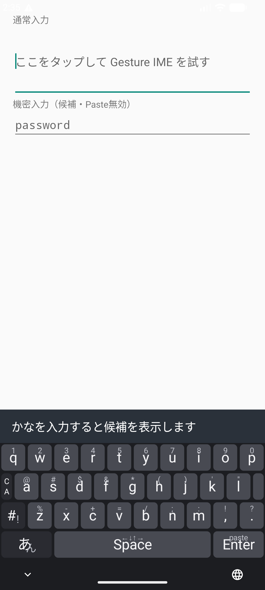
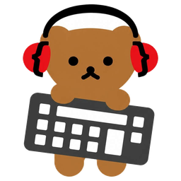

APPS & THINGS
Products
日々の道具を、自分の手で。
アプリと3Dプリント製品の紹介、使い方、ダウンロードをまとめました。

M5Stopwatch用
Apple Watchバンド対応ケース
小さい側のApple Watchバンドを使うための3Dプリントケース。バンド受けの試験データと、印刷用・編集用のケースデータを公開しています。
2026年10月13日現在、実物の印刷・取り付け・保持力は未テストです。

APPS & THINGS
日々の道具を、自分の手で。
アプリと3Dプリント製品の紹介、使い方、ダウンロードをまとめました。

小さい側のApple Watchバンドを使うための3Dプリントケース。バンド受けの試験データと、印刷用・編集用のケースデータを公開しています。
2026年10月13日現在、実物の印刷・取り付け・保持力は未テストです。